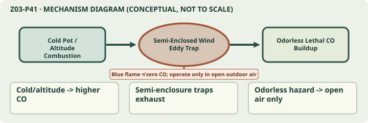

Z03-P41 · Fire and ignition · New manuscript
Recognize invisible carbon monoxide buildup at altitude and in partial enclosures
Understand why cold air, high elevation and semi-enclosed spaces accelerate silent CO accumulation.
When it applies · High-elevation camps, wind-sheltered porches, carports, snow trenches and cold-weather stove use.
Equipment · Open-air outdoor cooking location, battery lighting and symptom awareness across all group members.

Actions
- Recognize that carbon monoxide is completely colorless, odorless and tasteless—you cannot detect dangerous buildup by smell, smoke visibility or clean blue flame color.[C07, C16]
- Cold, altitude, appliance design and pot placement can affect combustion; appearance and altitude do not establish a safe CO output. Use camping stoves outdoors and follow the exact model limits.[C16, C21]
- Treat semi-enclosed carports, screened porches, snow-walled wind pits and open-door garages as trapped-exhaust enclosures where wind eddies recirculate lethal CO back toward people.[C16, C06]
Failure recognition · Treating an open vestibule or a blue flame as proof that exhaust cannot accumulate around people.[C05, C16]
Verify · Confirm all fuel combustion occurs in fully open outdoor air with exhaust carried cleanly away from occupied areas and air intakes.[C05, C06, C16, ED]
Stop or change course · Any flu-like headache, nausea, fatigue or confusion near combustion equipment demands immediate escape to open fresh air and emergency medical evaluation.[C07, T02]
Evidence and editorial notes
- C05 · CPSC · Portable Heaters and Camping Equipment (current web edition)
- Section: Carbon monoxide poisoning from portable camping equipment · Conditions: Tents, campers, vehicles and other enclosed spaces
Support: Fuel-burning camping equipment can lead to fatal carbon monoxide buildup in enclosed spaces.
Limitations: High altitude increases incomplete combustion and CO production. · Conflicting evidence: None; aligns with CDC-CO and NPS guidance.
Editorial note: Hard-stop prohibition against indoor/vestibule/tent combustion. · Specialist reviewer: Carbon monoxide safety and emergency medicine
Primary source · checked 2026-11-24 - C06 · CPSC · CPSC Warns of Generator, Carbon Monoxide and Fire Hazards Ahead of Hurricane Season (2026 seasonal agency guidance)
- Section: Prevent CO poisoning > Portable generators · Conditions: Portable fuel-driven generator during an outage
Support: Use outdoors at least 20 feet from the home with exhaust directed away from buildings.
Limitations: Wind eddies, overhanging eaves, and open windows can still draw exhaust toward occupied structures. · Conflicting evidence: None; 20 ft is a minimum floor, not a guarantee in enclosed alleys.
Editorial note: Anchored numeric separation rule for portable generators only. · Specialist reviewer: Electrical and carbon monoxide safety
Primary source · checked 2026-11-24 - C07 · CPSC · Carbon Monoxide Fact Sheet (current web edition)
- Section: CO poisoning symptoms; what to do if suspected · Conditions: Suspected carbon monoxide exposure
Support: Escape to fresh air immediately and contact emergency services. Symptoms can include headache, dizziness, nausea and confusion.
Limitations: CO is colorless and odorless; symptoms mimic viral illness or altitude fatigue and can incapacitate sleepers without waking. · Conflicting evidence: None; aligns with CDC-CO.
Editorial note: Standard CO emergency stop condition across Z02 and Z03. · Specialist reviewer: Carbon monoxide safety and emergency medicine
Primary source · checked 2026-11-24 - C16 · CDC · Carbon Monoxide Poisoning Basics (current web edition)
- Section: Carbon Monoxide Poisoning Basics > Sources and Prevention · Conditions: Any enclosed or semi-enclosed structure, garage, porch, tent, or vehicle
Support: Never burn charcoal, operate camp stoves, or run fuel-burning heaters inside homes, garages, tents, or vehicles even with doors or windows partly open.
Limitations: Vent cracks and open garage doors do not prevent lethal CO accumulation. · Conflicting evidence: Refutes dangerous myth that cracking a tent vent or garage door makes indoor combustion safe.
Editorial note: Hard-stop rule across all Z02 ventilation and Z03 combustion cards. · Specialist reviewer: Carbon monoxide safety and emergency medicine
Primary source · checked 2026-11-24 - C21 · MSR · PocketRocket 2 instructions (English owner instructions)
- Section: DANGER > Fire and explosion; Stove set-up · Conditions: PocketRocket 2 or its exact replacement instructions
Support: The PocketRocket 2 manual prohibits windscreens and specifies safe outdoor use, clearances and handling.
Limitations: Model-specific. Other equipment requires its own current instructions. · Conflicting evidence: See A01 cross-zone review.
Editorial note: Use only within the stated conditions. · Specialist reviewer: Camping stove and combustion safety
Primary source · checked 2026-11-24 - T02 · American Red Cross · First Aid Steps (current web edition)
- Section: First Aid Steps > Call 9-1-1 · Conditions: Lay emergency response to unresponsiveness, abnormal breathing or severe bleeding
Support: Activate EMS and get needed equipment. Follow dispatcher directions and act within training.
Limitations: Remote locations may delay EMS arrival, requiring sustained stabilization after activation. · Conflicting evidence: None; aligns with NPS-E.
Editorial note: Mandates early emergency activation and dispatcher adherence. · Specialist reviewer: EMS and wilderness medicine
Primary source · checked 2026-11-24
Source lineage · CPSC portable camping equipment and CDC CO basics; new manuscript · Classification · New manuscript.